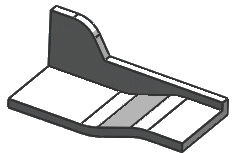

在锐边终止
在锐边终止允许面倒圆延伸穿过倒圆中间或端部的凹槽。
当遇到锐边时，面倒圆一般会尝试继续进行倒圆，直到结束(并且可能会超出定义面)，并调整要与它相交的部件几何体。
您也可以 使用此选项在遇到局部特征(如具有锐边的凹口)时结束面倒圆。
|
 |
输入形状 |
|
|
清除此选项时，NX 会创建倒圆，就像凹口不存在一样，然后使用凹口来修剪这个面。 |
|
|
选择此选项时，NX 会从定义面的最后一个边缘开始延伸倒圆，这样，倒圆就不会遇到锐边。 |